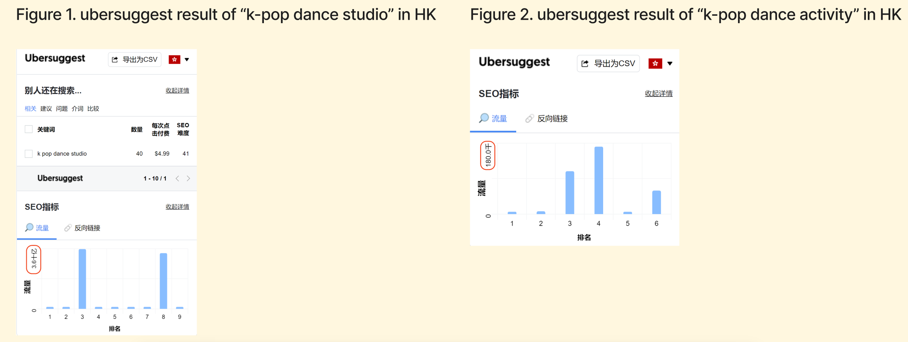

Main functional objectives of my website is to offer a platform for k-pop dance lover in HongKong to find dance studio information and communicate with other dance lovers. Therefore, I can divide the main functions into two parts. One is information acquisition, the other is community.
Before the sorting card part, I’ve optimized my design plan and made 2 main changes.
The first one : two weeks ago, I decided to include both information of dance studios and dance activities in the information acquisition part. However, I finally decide to only focus on information of k-pop dance studio in Hongkong.
1.As the users mentioned, even as enthusiastic k-pop lovers, they don’t participate in K-pop activities quite often. Plus, they don’t actively search for k-pop activity very often, instead they prefer to go to those being recommended by algorithm and their friends.
2. As we can see from the search data, in HK, “k-pop dance studio” ( see figure 1) is much more popular than “k-pop dance activity” (see figure 2). Also, the content related to “k-pop dance studio” has better ability to monetize.

The second one: 2 weeks ago, I claimed enthusiastic k-pop dance lovers are those users my business model aiming for. This kind of users are still those who I am focusing on, however, I also add a tactic in my monetization methods which aims at dance teachers and studios. For reasons why I decide to do so, you can view in my journal.
Usability test
Based on what I’ve mentioned before, I decide to do the usability test from 4 side
Dance Studio Side: 1. have an overview of locations of k-pop dance studio in HK 2. find a dance studio which fits you, collect it and find it in your collection 3. make evaluation of a dance studio you have been before
Community Side: 4. view sharing post published by others, collect it and make comments 5. have questions and wanna hear others’ advice, publish posts to solve it 6. view the post regarding finding k-pop dance teacher or friends to learn or dance together 7. wanna find some recommended k-pop dances to learn
VIP : 8. acquire information regarding VIP, register for paid VIP
Contact :9. contact to give advice, as an individual user
10.contact to ask for corporations, as a business user
Tasks that I reckon may be frequently used, or important for the monetization of the web, or with several steps to complete are tested twice.
For more specific analysis you can view in my PDF document.